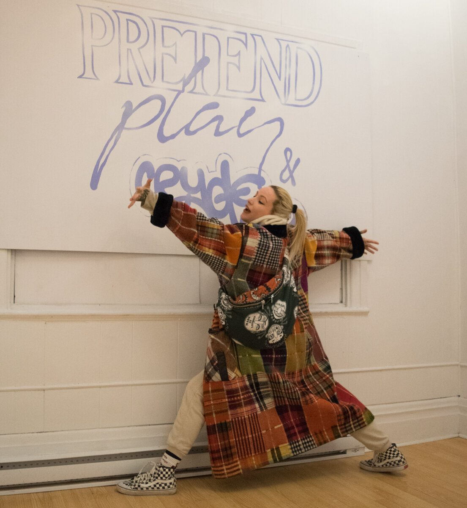
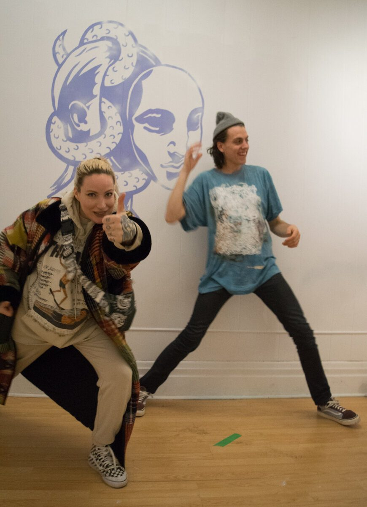

An augmented reality fashion show where bodies become architecture, models appear out of thin air, and the runway exists in a dimension between the physical and the virtual.
Un défilé de mode en réalité augmentée où les corps deviennent architecture, où les mannequins surgissent de nulle part et où le podium existe dans une dimension à mi-chemin entre le physique et le virtuel.
Pretend Play was a collaboration with the incredible Rosalie Lemay, who created a line of unique handmade clothes over many months. The project explored how augmented reality could transform the fashion show format: rather than walking a physical runway, models were 3D scanned and placed into AR space. Models appeared out of thin air, walking on walls, shifting scale, superimposed on reality.
Pretend Play est né d’une collaboration avec l’incroyable Rosalie Lemay, qui a créé une ligne de vêtements uniques faits main au fil de nombreux mois. Le projet explorait comment la réalité augmentée pouvait transformer le format du défilé de mode : plutôt que de fouler un podium physique, les mannequins étaient numérisés en 3D puis déposés dans l’espace de RA. Les mannequins surgissaient de nulle part, marchaient sur les murs, changeaient d’échelle, superposés à la réalité.
The models were scanned using both depth-sensing cameras and photogrammetry, sponsored by Eric Paré and his team at the Montreal Studio. The resulting 3D figures carry the visual artifacts of the scanning process: fragmented surfaces, floating geometry, digital noise. These artifacts became part of the aesthetic rather than flaws to be corrected. The imperfections of the technology became the texture of the work.
Les mannequins ont été numérisés à l’aide de caméras à détection de profondeur et de photogrammétrie, grâce au soutien d’Eric Paré et de son équipe au Montreal Studio. Les figures 3D qui en résultent portent les artéfacts visuels du processus de numérisation : surfaces fragmentées, géométrie flottante, bruit numérique. Ces artéfacts sont devenus une composante de l’esthétique plutôt que des défauts à corriger. Les imperfections de la technologie sont devenues la matière même de l’œuvre.

Augmented reality allows fashion shows to transcend the limitations of rooms and human bodies. Models appear from thin air, walk on walls, shift scale. The runway is no longer static but a series of superimposed paths. The entities come in and out from the walls. Humans, bodies become architecture.
La réalité augmentée permet aux défilés de mode de transcender les limites des salles et des corps humains. Les mannequins surgissent de nulle part, marchent sur les murs, changent d’échelle. Le podium n’est plus statique : il devient une série de trajectoires superposées. Les entités entrent et sortent des murs. Les humains, les corps deviennent architecture.
Working with Roza and Sebastian was a creative pleasure. Their energy invigorated everything around them and they poured their souls into these creations. The combination of handmade physical garments with digital scanning technology produced something neither medium could achieve alone.
Travailler avec Roza et Sebastian a été un pur plaisir créatif. Leur énergie stimulait tout ce qui les entourait et ils ont mis toute leur âme dans ces créations. L’alliance de vêtements physiques faits main et de la technologie de numérisation a produit quelque chose qu’aucun des deux médiums n’aurait pu atteindre seul.

The limitations of rooms and human bodies can be transcended. Models appear out of thin air, walking on walls, shifting scale, superimposed. Humans, bodies become architecture.
Les limites des salles et des corps humains peuvent être transcendées. Les mannequins surgissent de nulle part, marchent sur les murs, changent d’échelle, se superposent. Les humains, les corps deviennent architecture.


Pretend Play pushed the AR experiments of Illusive Sympathy into a new domain: fashion as a medium for exploring what bodies become when translated into digital space. The 3D scans of models wearing Rosalie’s handmade garments captured not just the clothing but the gesture, the posture, the presence of the wearer, all rendered with the beautiful imprecision of the scanning process.
Pretend Play a prolongé les expérimentations en RA d’Illusive Sympathy vers un nouveau territoire : la mode comme medium pour explorer ce que deviennent les corps une fois traduits dans l’espace numérique. Les numérisations 3D des mannequins vêtus des créations faites main de Rosalie captaient non seulement le vêtement, mais le geste, la posture, la présence de celui ou celle qui le portait, le tout rendu avec la belle imprécision du processus de numérisation.
The project pointed toward a future where fashion, architecture, and digital art converge. A theme that would later echo in Lignes de Fuite and in the broader trajectory of Samuel’s work, where the human body and virtual space continuously inform each other.
Le projet annonçait un avenir où la mode, l’architecture et l’art numérique convergent. Un thème qui allait plus tard résonner dans Lignes de Fuite et dans la trajectoire plus large du travail de Samuel, où le corps humain et l’espace virtuel ne cessent de se répondre.